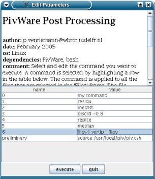

home
download
introduction
guide
how to ...
documentation
scripting
forum
javadoc
imprint
Fed up with point and click?
JPIV comes with powerful scripting capabilities. To avoid confusion: the implemented scripting language has nothing to do with Java-Script. The scripting capabilities are implemented by using a Java-Interpreter class programmed by Pat Niemeyer in the scope of the BeanShell project. For more information about BeanShell see: http://www.beanshell.org. The scripting syntax is identical to Java with a lot of simplifications.
A first, simple script could be the following:
divide(double a, double b) {
System.out.println(a/b);
}
The first line defines the function divide.
The function takes two parameters of the type double.
The function body contains just one line: a call of the method println of System.out.
To run the script, type the three lines into the "Cmd" window.
Select the three lines with the mouse and click execute selection from the context menu.
Now the function definition is stored in the memory.
Now you can use the function in a script:
divide(8, 4);
divide(9, 3);
divide(10, 2.5);
The execution of this lines results in the following output:
2.0
3.0
4.0
Java is designed for object oriented programming. That means that logic components of a program are represented by objects. Each object has methods that can be called to do something with this object. A class is the implementation or description of an object and its methods. An object is an instance of a class that is constructed at runtime. Methods are accessed with the help of the dot-notation. See the following example to see what that means.
First a new object String is created and initilized.
Then another object is created which is a string-array String[].
The String class has a method called split(String regex).
This method splits a text-string into peaces and returns this peaces as a string-array object.
The method split(String regex) takes one parameter regex which is also a string.
The parameter indicates where to split the text-string.
In the example below we use a space-character.
// create a new String object and initialize it
String myString = "I am a string";
// create a new String-array object and use the
// method split(String regex) to split the string at
// whitespaces
String[] words = myString.split(" ");
// print the result
for(int i = 0; i < words.length; i++) {
System.out.println(words[i]);
}
I
am
a
string
You can use all core Java classes plus all classes that belong to the jpiv2-package to write a script.
Both libraries are pretty well documented on the internet.
See http://java.sun.com/j2se/1.5.0/docs/api/ for the documentation of the Java 2 Platform Std. Ed. v1.5.0.
After opening the documentation scroll down in the left frame until you find the class String and klick on it.
In the main frame the class description appears.
Scroll down to see a desrcription of the method split(String regex) that you just used in the example above.
To see the documentation of the jpiv2-package click on the "javadoc" link in the navigation panel of this page.
When you are using the jpiv2-package you might want to use methods of already instantiated objects, like the "Files" window or another already existing program-component.
Here you need to know that the main program's object name is "jpiv".
By writing jpiv.method(parameter1, parameter2, ...) you can access this methods.
"jpiv" is a handle to the main program object.
"jpiv" also provides methods to get handles to other program components.
Call jpiv.getListFrame() for example to get a handle to the "File" window.
The following example shows how to use methods of already existing objects.
The code opens the first three files in the "File" window.
for(int i = 0; i < 3; i++) {
// getting a handle to the "File" window of the running program
// the "File" window is an instance of the class ListFrame which
// is part of the jpiv2 package
jpiv2.ListFrame lf = jpiv.getListFrame();
// calling the jpiv2.ListFrame method "getElementAt(int i)"
String filename = lf.getElementAt(i);
// call the display(filename) method of the running program to show the
// image on screen
jpiv.display(filename);
}
You can write scripts with any text editor. Save the script either ascii or UTF-8 encoded.
The script is executed by calling Script - execute script file.
If the script is saved into the ./jlib/jsc/ directory, a link to this file in form of a menu item will be generated automatically in the Script drop down menu during startup.
Use the method jpiv2.ScriptDlg(...) for user interaction.
This class has set... and get... methods to configure the dialog and to retrieve the variable values.
The method display() brings up the dialog like shown on the figure below.

User interaction via the script dialog.
Two example scripts are included in the ./jlib/jsc/ directory. 1example_scripting_introduction and 2example_resample_vector_field demonstrate how to:
Open the script files in a text editor and read the comments between the code lines.
You might wish to integrate JPIV into your own program. This is easily possible by calling JPIV from within your code on the command line. JPIV understands only a single command line option: This is the name of a file, that will be interpreted as a BeanShell script. This script will be executed immediately after startup. From within this script, you can access all JPIV classes and methods, which is more powerful than any other command line option would be. Example for calling jpiv: java -jar -Xmx4G jpiv.jar myScript.jsc
Some people prefer jpiv to accept a list of images on the command line. The images should be evaluated immediately. The executable jpivc.jar can do that. Launch a PIV evaluation via command line by executing java -jar -Xmx4G jpivc.jar *.tiff, for example. The files *.tiff are your PIV images.